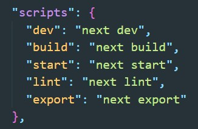
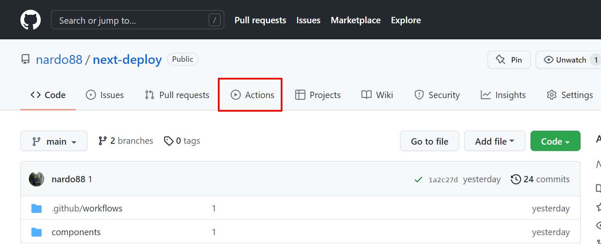
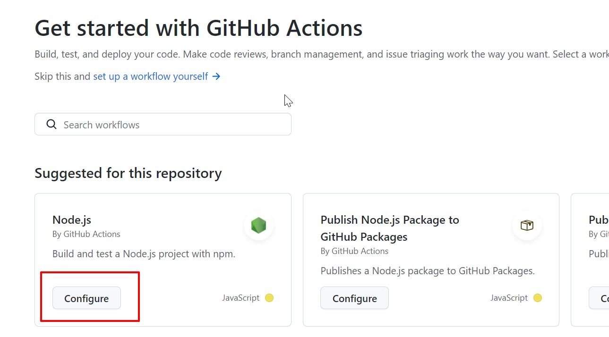
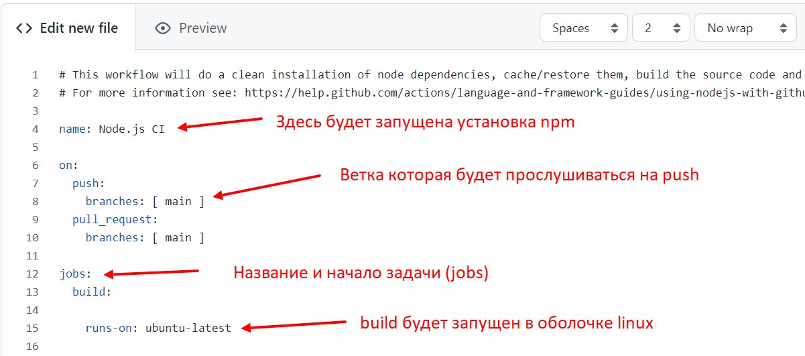
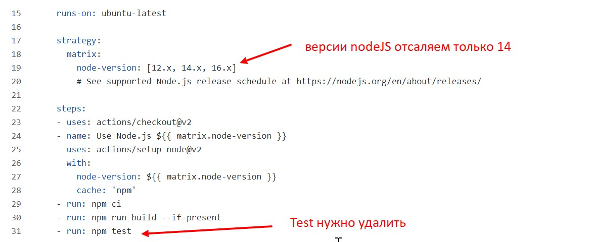
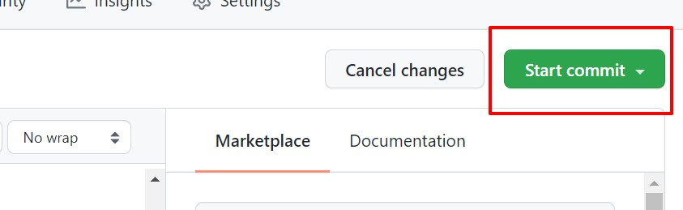
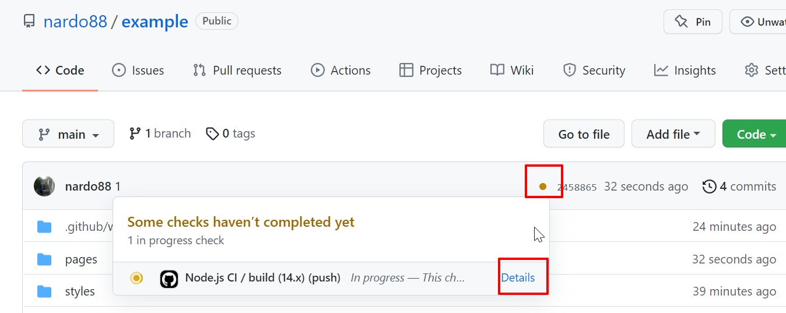
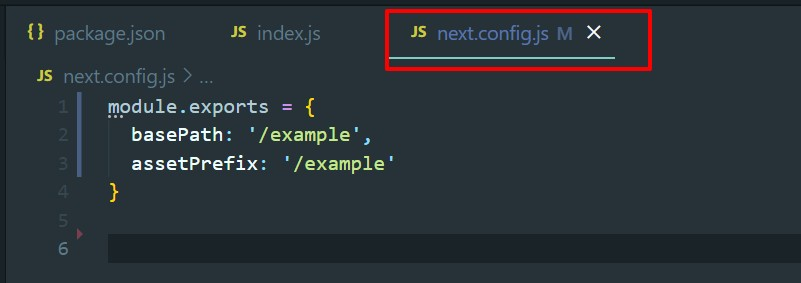

Допустим унас есть проект на Next. Здесь важно что бы сам проект находился в корне репозитория.
1 первое что необходимо сделать - это добавить в package.json еще один скрипт
"export": "next export" 2 Теперь настраиваем Actions в gitHub
Для этого открываем наш репозиторий и переходим в раздел Actions
Далее нажимаем кнопку Configure в разделе NodeJS где написано Build and test a Node.js project with npm.
Откроется страница с файлом конфигурации jobs (задачи)
Рассмотрим конфигурацию
Далее
Вот пример окончательной конфигурации
# This workflow will do a clean installation of node dependencies, cache/restore them, build the source code and run tests across different versions of node
# For more information see: https://help.github.com/actions/language-and-framework-guides/using-nodejs-with-github-actions
name: Node.js CI
on:
push:
branches: [ main ]
pull_request:
branches: [ main ]
jobs:
build:
runs-on: ubuntu-latest
strategy:
matrix:
node-version: [14.x]
# See supported Node.js release schedule at https://nodejs.org/en/about/releases/
steps:
- uses: actions/checkout@v2
- name: Use Node.js ${{ matrix.node-version }}
uses: actions/setup-node@v2
env:
ACTIONS_ALLOW_UNSECURE_COMMANDS: 'true'
with:
node-version: ${{ matrix.node-version }}
cache: 'npm'
- run: npm ci
- run: npm run build --if-present
- run: npm run export
- run: touch ./out/.nojekyll
- name: Deploy 🚀
uses: JamesIves/github-pages-deploy-action@3.5.9
env:
ACTIONS_ALLOW_UNSECURE_COMMANDS: 'true'
with:
GITHUB_TOKEN: ${{ secrets.GITHUB_TOKEN }}
BRANCH: gh-pages # The branch the action should deploy to.
FOLDER: out # The folder the action should deploy.
После того как добавили изменения коммитим изменения
После коммита появится yml файл. И так же запустится задача
После того как задача отработала появится ветка gh-pages
3 Настраиваем GitHub Pages
Переходим в репозитории во вкладку Settings - раздел pages и указываем для pages дефолтную ветку gh-pages

4 Добавляем в проект фалй конфигурации Next
Это нужно что бы Next понимал дефолтный путь приложения и префикс. Так как в GH-PAGES получается домен второго уровня
Файл выглядит вот так:
где example - это название репозитория
Теперь при пуше в мастер изменения будет запускаться задача, которая билдит и деплоит проект